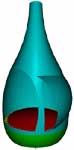
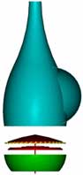
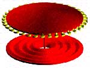
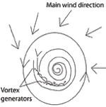

the VORTEX WORLD
|
 |
 |
| Figure 1 and 2, showing a cut up view of the windmill. |
a windmill
|
||||||
|
based on Viktor Schaubergers Repulsin |
||||||
| Here follows a short description on a wind mill based on Viktor Schaubergers Repulsin or the "UFO"-engine. In order to understand how this type of wind mill works we must know some of the basics in Viktor Schaubergers technology. Schaubergers idea was to use sub pressure as a source of energy instead of over pressure. He called this technique Implosion. The "Explosion technique" that we use today is literally explosive as it is based on high temperature and high pressure. However, Implosion is condensing and cooling. Implosion, is mother natures technique and it collects or condenses low amounts of energy and build up higher forms of energy and life. One secret of Viktor Schaubergers devices is the use of the Coanda effect. The Coanda effect is basically the same thing that happens on the low pressure side of an airfoil. The air slicks on the curved upper side and creates a sub pressure zone that lifts the airplane. You can read more about the Coanda effect and the Repulsin on the repulsin page
The turbine has three main parts: upper and under membrane (red) and the turbine vanes (yellow). The upper membrane is shaped as the end of and egg. This shape helps to form the main vortex as this circulates around it. The air is sucked through the membranes and blow on the turbine vanes as it passes into the chamber. The turbine vanes translates the impulse to the upper membrane and it starts to circulate around the axis. When the circulating speed reaches a critical level the air that ruches between the two membranes starts to spin around its own axis. This creates long threads of air that multiply the transversal energy. As the peripheral speed increases due to the larger radius the threads will be more and more twisted together. When they are leaving the membranes the will blow very hard on the turbine vanes creating a torque around the axis maintaining the rotation, and acting as a source of power to the generator. The main vortex is generated when the wind out side blows into the chamber through the "gill". When the air passes the gill, small vortex generators shapes many small vortices. See Fig. 5 in the picture below.
|

